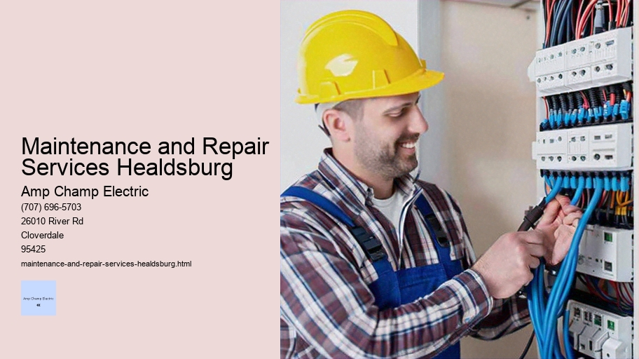

News
Electrical Installation Healdsburg
Electrical Installation Healdsburg
Electrical Installation Santa Rosa
Electrical Installation Cloverdale
Electrical Installation Geyserville
Electrical Installation Windsor
Maintenance and Repair Services Healdsburg
Maintenance and Repair Services Healdsburg
Maintenance and Repair Services Santa Rosa
Maintenance and Repair Services Cloverdale
Maintenance and Repair Services Geyserville
Maintenance and Repair Services Windsor
Electrical Safety Inspections Healdsburg
Electrical Safety Inspections Healdsburg
Electrical Safety Inspections Santa Rosa
Electrical Safety Inspections Cloverdale
Electrical Safety Inspections Geyserville
Electrical Safety Inspections Windsor
Energy Efficiency Upgrades Healdsburg
Energy Efficiency Upgrades Healdsburg
Energy Efficiency Upgrades Santa Rosa
Energy Efficiency Upgrades Cloverdale
Energy Efficiency Upgrades Geyserville
Energy Efficiency Upgrades Windsor
Specialty Electrical Services Healdsburg
Specialty Electrical Services Healdsburg
Specialty Electrical Services Santa Rosa
Specialty Electrical Services Cloverdale
Specialty Electrical Services Geyserville
Specialty Electrical Services Windsor
About Us
Contact Us

Maintenance and Repair Services Healdsburg
GFCI Outlet Installation
Maintenance and Repair Services: The Unsung Heroes of Our Daily Lives
In the fast-paced world we live in, convenience and efficiency are often taken for granted. We flip switches, press buttons, and expect everything to work seamlessly. But behind the smooth operation of our daily lives lies an intricate web of maintenance and repair services that ensure the functionality and longevity of the systems and objects we depend on.
At its core, maintenance is a proactive approach focused on preserving equipment and preventing breakdowns before they occur. It involves regular check-ups, cleaning, lubrication, adjustments, and replacements of worn parts. Maintenance can be scheduled based on time intervals or usage cycles – think oil changes every 3,000 miles or annual HVAC inspections before winter strikes.
Repair services, on the other hand, are reactive by nature. They come into play when something has gone wrong – a burst pipe, a malfunctioning refrigerator, or a car refusing to start.
Maintenance and Repair Services Healdsburg - Fuse Box Upgrade
Energy Audit Services
Electrical Safety Equipment
Electrical Permit Assistance
High Voltage Services
Repair technicians diagnose issues and restore broken items to their working condition. These skilled professionals wield tools as well as knowledge to troubleshoot problems across various domains from electronics to plumbing to automotive repair.
The importance of maintenance cannot be overstated. Regular upkeep extends the life expectancy of products and machinery while ensuring safety standards are met – imagine elevators without routine checks or planes without thorough pre-flight inspections! In industrial settings particularly, predictive maintenance leverages technology such as sensors and data analytics to anticipate failures before they happen; this model not only saves money in terms of reduced downtime but also enhances worker safety by preventing accidents.
For homeowners too, proper care is essential for protecting their investment. A leaky roof ignored can lead to costly water damage; neglected gutters may result in foundation issues; an unmaintained furnace could spell a cold winter night without heat. Hence engaging with reliable service providers for periodic checks keeps potential disasters at bay while also assuring peace of mind.
The realm of repair is equally critical because wear-and-tear is inevitable over time despite the best preventive measures. When appliances go kaput or machines grind to a halt, it disrupts our routines – sometimes significantly so if it's something like loss of electricity or vehicle troubles that leave us stranded. Enter the repair technician - part detective with keen problem-solving skills who brings back normalcy one fixed issue at time.
Perhaps most impressive about these fields is their adaptability alongside technological advancements. As new types of machinery hit markets - be it electric cars or smart home systems - maintenance protocols evolve accordingly while repair techniques become more sophisticated with advanced diagnostic equipment now commonplace in workshops.
Despite being indispensable facets within modern society’s infrastructure fabric yet often overlooked until needed; it's imperative we acknowledge not just necessity but also artistry involved within these tradespeople’s craftmanship whether they're calibrating complex medical devices ensuring healthcare delivery continuity or servicing wind turbines harnessing renewable energy high above ground level skies.
In conclusion then let us celebrate unsung heroes amongst us those men women contributing day-in-day-out maintaining repairing very foundations upon which lifestyle conveniences rest knowing full well that without diligent efforts applied within respective spheres influence our collective experiences would look quite different less reliable far more chaotic indeed gratitude expressed next time you encounter someone from this vital sector perhaps might make all difference world even if just smile shared acknowledgement thanks extended due respect truly deserved.
Title: Navigating the Maze: Troubleshooting Electrical Faults and Failures
In the intricate web of wires, circuits, and devices that compose our modern electrical systems, the inevitability of faults and failures is a reality we cannot overlook. Whether in residential homes, commercial buildings, or industrial settings, troubleshooting such issues is both an art and a science—a systematic quest to diagnose problems that disrupt the seamless flow of electricity we often take for granted.
When embarking on this investigative journey to pinpoint electrical troubles, one must don the dual hats of a detective and an analyst. The process commences with observation; much like a sleuth at a crime scene seeking clues. A flickering light, a dead outlet, or a tripped circuit breaker can all be telling signs that guide the troubleshooter towards the underlying anomaly.
The first step in addressing any electrical issue is ensuring safety. Electricity is unforgiving; hence, proper precautions are mandatory before delving into diagnostics. This means turning off power to affected areas and employing personal protective equipment as necessary to prevent shock or injury.
Once safety measures are in place, one must understand that troubleshooting is inherently methodical—an exercise in patience as much as it is in technical acumen. It begins with gathering information about when and how the problem manifests itself. Is it intermittent or constant? Does it affect multiple circuits or just one? Are there external factors such as weather conditions contributing to the issue? Detailing these elements provides valuable context for further investigation.
The next logical phase involves visual inspection—scrutinizing wiring, connections, components for signs of damage such as burns, corrosion or loose fittings which can impede current flow or cause short circuits. Infrared thermometers and thermal cameras also come in handy here by revealing hot spots indicative of overloading or faulty insulation.
From visual cues we move onto testing using specialized tools like multimeters which measure voltage levels across different points of an installation to verify if they fall within expected ranges; continuity testers check for open circuits while insulation resistance testers assess whether insulating materials are still effective barriers against current leakage.
Maintenance and Repair Services Healdsburg - AFCI Breakers
AFCI Breakers
Wire and Cable Management
Fuse Box Upgrade
Power Distribution Units (PDUs)
Energy Audit Services
Electrical Safety Equipment
Equipped with these tools and data gleaned from them comes analysis—the cerebral portion where knowledge meets application. Here lies the conundrum; electrical faults rarely present themselves plainly but rather as symptoms stemming from numerous potential causes. A blown fuse could mean too many appliances were drawing power simultaneously (overload) but could also signify more sinister origins like short-circuiting due to damaged wires (fault condition).
It's crucial during this stage not to leap hastily towards conclusions but rather approach each hypothesis critically—methodically eliminating possibilities through further testing until only one viable explanation remains standing firm amidst scrutiny.
Sometimes resolving complex electrical issues involves beyond-the-surface interventions such as tracing hidden wiring within walls using signal tracers or employing oscilloscopes to visualize waveform anomalies on electronic circuits which might escape less sophisticated equipment.
In cases where troubleshooting reaches its limits due to highly complex systems or advanced faults requiring deeper expertise than available onsite professional help may be summoned—a reminder that collaboration often plays key roles in unraveling stubborn technical enigmas.
Upon identifying causes remedial actions can range from simple fixes like tightening connections replacing worn out components up-to reconfiguring entire sections of wiring architecture depending upon severity nature diagnosed fault/failure—all aimed restoring functionality preventing recurrence similar predicaments future endeavors vigilance maintenance practices play preventative roles keeping electrical gremlins bay safeguarding harmonious operation technology powers lives daily basis relentless pursuit reliable connectivity stands testament human resilience face adversity hidden yet vital realm electrons currents circuitry lie challenges triumphs await those brave enough delve mysteries therein —the saga troubleshooting unfolds eternally anew.
electrical-installation-healdsburg.html
electrical-installation-santa-rosa.html
electrical-installation-cloverdale.html
electrical-installation-geyserville.html
electrical-installation-windsor.html
maintenance-and-repair-services-healdsburg.html
maintenance-and-repair-services-santa-rosa.html
maintenance-and-repair-services-cloverdale.html
maintenance-and-repair-services-geyserville.html
maintenance-and-repair-services-windsor.html
electrical-safety-inspections-healdsburg.html
electrical-safety-inspections-santa-rosa.html
electrical-safety-inspections-cloverdale.html
electrical-safety-inspections-geyserville.html
electrical-safety-inspections-windsor.html
energy-efficiency-upgrades-healdsburg.html
energy-efficiency-upgrades-santa-rosa.html
energy-efficiency-upgrades-cloverdale.html
energy-efficiency-upgrades-geyserville.html
energy-efficiency-upgrades-windsor.html
specialty-electrical-services-healdsburg.html
specialty-electrical-services-santa-rosa.html
specialty-electrical-services-cloverdale.html
specialty-electrical-services-geyserville.html
specialty-electrical-services-windsor.html
privacy-policy.html
sitemap.html
sitemap.xml
about-us.html
feed.xml
Regular electrical system inspections
Title: The Importance of Regular Electrical System Inspections
In the intricate web of modern living, electricity is the silent pulse powering our homes, businesses, and industries. It lights up our rooms, keeps our food fresh, powers our computers, and drives countless devices that are integral to our daily routines. However, this marvel of human innovation does not come without its risks. Just like any other critical infrastructure component, electrical systems require regular inspections to ensure safety and reliability.
Electrical Permit Assistance
In this essay, we will delve into why regular electrical system inspections are indispensable for maintaining a safe and efficient environment.
Firstly, safety stands as the paramount reason for regular electrical system inspections.
Electrical Safety Equipment
Faulty wiring, overloaded circuits, and outdated components can lead to catastrophic outcomes such as electrical fires or electrocutions. According to data from the National Fire Protection Association (NFPA), electrical failures or malfunctions are leading causes of home structure fires in the United States. These tragic events often result from preventable issues that could have been identified through a regular inspection by a qualified electrician.
Regular inspections serve not only to prevent disasters but also to protect equipment from damage caused by surges, spikes, or inconsistent power supplies. By identifying potential problems early on—such as loose connections or degraded insulation—homeowners and businesses can avoid costly repairs or replacements down the line.
Moreover, technology evolves rapidly; henceforth so do standards in building codes and electrical regulations. What was deemed safe a decade ago may no longer be considered sufficient today. Regular inspections help ensure that an electrical system complies with current local codes and international standards which govern everything from wire size to breaker capacities.
Energy efficiency is another significant aspect underlining the importance of regular inspections. An optimized electrical system reduces energy waste which translates directly into lower utility bills and a smaller carbon footprint—an increasingly important consideration in today’s environmentally-conscious world.
For homeowners planning renovations or additions to their property, an inspection can provide valuable insights into whether their existing system can handle additional load demands or if upgrades are necessary before proceeding with construction plans.
In commercial settings where downtime due to electrical failure can equate to lost revenue; routine maintenance becomes even more crucial. A periodic inspection schedule allows businesses to plan for necessary repairs during off-peak hours thus minimizing operational disruptions.
Fuse Box Upgrade
It's worth noting that while some minor checks can be performed by trained individuals following proper safety protocols most aspects of an electrical inspection should be conducted by certified professionals who possess the expertise required for such tasks.
To conclude regular electrical system inspections are not merely advisable—they're essential practices grounded firmly in considerations of safety efficiency compliance and foresight against unexpected failures. Homeowners businesses institutions indeed anyone who relies on consistent electric power should make these evaluations part of their routine maintenance agenda ensuring peace of mind knowing that their invisible lifeline is secure robust—and above all else—safe.
Repair of damaged wires or components
Repairing damaged wires or components is an essential aspect of maintaining the functionality and safety of any electrical system. Whether in a household, commercial setting, or within complex electronic devices, the ability to effectively repair these elements can prevent hazards, extend the lifespan of equipment, and ensure that systems operate at optimal efficiency.
Damaged wires are a common issue that can arise from various causes such as physical wear and tear, overloading, corrosion, or even rodent damage. These impairments can interrupt electrical flow and potentially cause dangerous situations like short circuits or fires. To address this problem, one must first identify the affected wire by visually inspecting for signs of damage such as fraying, discoloration, or exposed conductive materials. Once located, power should be disconnected before any repair work begins to ensure safety.
The repair process typically involves cutting out the damaged section of wire and stripping back insulation to reveal unharmed conductors on either side. Using appropriate connectors or soldering techniques depending on the application's requirements ensures a secure connection between the newly joined ends.
Energy Audit Services
It's crucial that repaired wires are re-insulated with electrical tape or heat-shrink tubing to restore their protective layer against environmental factors and electrical hazards.
When it comes to repairing components – which may include anything from capacitors and resistors in electronic circuits to larger mechanical parts in appliances – precision and expertise become increasingly important. Faulty components not only hamper performance but could also introduce risks related to overheating or failure under load conditions. The approach for component repair often starts with diagnostics; using tools such as multimeters allows technicians to pinpoint malfunctioning parts.
Once identified, replacing components usually requires desoldering the faulty element from its circuit board followed by installing a new one ensuring proper orientation and connectivity. Soldering skills play a vital role here; creating cold joints or overheating surrounding areas might further damage the circuitry. After installation of new parts, testing is imperative to confirm successful repairs before reintroducing power.
Preventative measures also form an integral part of managing wire and component health; this includes regular inspections for early detection of potential issues along with adhering to manufacturer guidelines regarding usage limits and environmental conditions suitable for different types of equipment.
In conclusion, repairing damaged wires and components is not just about fixing what is broken but understanding why it failed in the first place so similar problems can be prevented in future instances. It demands attention to detail, adherence to safety protocols, technical knowledge as well as practical skills—all contributing towards restoring systems back into service safely and efficiently while promoting longevity through meticulous maintenance practices.
Replacement of outdated electrical equipment
Title: Embracing Modernity: The Imperative of Replacing Outdated Electrical Equipment
In the ever-evolving landscape of technology, staying abreast with the latest advancements is not only beneficial but often essential for safety, efficiency, and competitiveness. This is particularly true in the realm of electrical equipment, which forms the backbone of modern civilization's infrastructure. Outdated electrical systems can pose significant risks and drawbacks that extend beyond mere inconvenience; they touch upon broader issues such as energy conservation, operational costs, and even environmental sustainability.
The Dangers of Obsolescence
Firstly, it is important to recognize the inherent dangers linked to outdated electrical equipment. As components age, they are more likely to malfunction due to wear and tear or because they were not designed to handle contemporary power loads or fluctuations. These malfunctions can lead to short circuits or overheating, which not only endanger the lifespan of connected devices but also pose serious fire hazards. In essence, clinging onto antiquated systems is a gamble against safety where stakes are high and consequences potentially dire.
Enhancing Efficiency
Moreover, older models of electrical gear typically lack the energy efficiency that their modern counterparts boast. It means that by continuing to use them, individuals and businesses incur higher electricity bills while simultaneously exerting unnecessary strain on power grids. Newer technologies offer smarter energy management through features like programmable settings, lower standby power consumption, and compliance with current regulatory standards for energy usage. Henceforth, replacing outdated units with cutting-edge equipment becomes an investment rather than an expense—yielding long-term savings in both financial terms and energy resources.
Keeping Pace with Technological Advances
Technology advances at a rapid pace in this digital age; newer appliances and machines often need compatible electrical setups for optimal performance. For instance, many modern commercial operations rely heavily on computerized systems that require steady power supplies with minimal interference from electrical noise or fluctuations. By upgrading old wiring and panels to suit these sensitive devices better ensures reliability—a critical element for maintaining productivity in today’s tech-centric work environments.
Regulatory Compliance
Maintenance and Repair Services Healdsburg - Power Distribution Units (PDUs)
Fuse Box Upgrade
Power Distribution Units (PDUs)
Energy Audit Services
Electrical Safety Equipment
Electrical Permit Assistance
Another compelling reason for replacing outdated electrical equipment lies within legal boundaries—regulations change over time as new safety standards come into effect. What was once deemed acceptable may now fall short of code requirements leading to legal liabilities or penalties if left unaddressed. Regular upgrades ensure compliance with local building codes and industry-specific regulations which protect property owners from potential litigation while ensuring a safe environment for occupants.
Environmental Responsibility
Lastly yet significantly is the issue of environmental stewardship. Aging electric installations tend to be less eco-friendly given their inefficiency and propensity towards using hazardous materials no longer favored by green practices (e.g., PCBs found in old transformers). Upgrading paves way towards adopting renewable energy technologies such as solar panels or wind turbines which require compatible infrastructure capable of integrating into smart grids thereby reducing carbon footprints contributing towards global efforts combating climate change.
Conclusion
In conclusion replacing outdated electrical equipment should not be viewed merely as routine maintenance—it’s a conscientious choice aligning personal safety operational excellence regulatory adherence eco-consciousness hand-in-hand progress made possible through technological innovation signifies step forward holistic approach enhancing quality life society whole Thus whether context residential commercial industrial imperative remains clear Embrace modernity responsibility phase out antiquated systems favor secure sustainable efficient future
Emergency repair services for power outages
Title: The Critical Role of Emergency Repair Services in Power Outage Resilience
In the darkness of an unexpected power outage, when homes are plunged into silence and businesses grind to a halt, the significance of emergency repair services becomes undeniably apparent. These services not only represent a beacon of hope in times of uncertainty but also stand as pillars of stability that communities rely upon to restore normalcy. This essay delves into the integral role emergency repair services play during power outages, highlighting their importance for individuals, businesses, and society at large.
To begin with, it is essential to understand what causes power outages. They can occur due to natural disasters such as hurricanes, earthquakes, or severe storms that damage power lines and infrastructure. Human errors and equipment failure also contribute to service interruptions. Regardless of the cause, the result is often the same: disrupted lives and economies.
When power vanishes from our lives, even temporarily, we become acutely aware of our dependence on electricity. Our homes lose light and warmth; refrigerators stop preserving food; medical devices critical for health may fail to operate.
AFCI Breakers
In businesses, data can be lost; production lines may stop; financial transactions could be halted – all leading to economic losses.
This is where emergency repair services come into play — teams trained to respond promptly when disaster strikes. These unsung heroes work tirelessly around the clock to assess damages and execute repairs swiftly and safely.
Emergency repair teams consist of skilled electricians, engineers, linemen, and support personnel who have prepared for crisis situations through rigorous training exercises. They possess specialized knowledge about electrical systems which allows them to navigate hazardous environments efficiently while minimizing risks.
Their prompt response is facilitated by advanced technology such as GPS tracking for rapid deployment and mobile applications that provide real-time updates on restoration efforts. Furthermore, they employ heavy-duty equipment such as bucket trucks and portable generators that enable them to tackle complex repairs under challenging conditions.
Communication plays a vital role in managing power outages effectively. Emergency repair service providers maintain transparent communication channels with utility companies, local governments, law enforcement agencies, and customers throughout the restoration process. This coordination ensures public safety measures are observed while keeping everyone informed about expected recovery times.
The benefits provided by emergency repair services during power outages extend beyond immediate problem-solving—they contribute significantly towards building community resilience against future disruptions. By restoring power quickly after an outage occurs these teams help prevent secondary issues like water supply problems or healthcare disruptions from compounding the initial crisis.
Furthermore , preventive maintenance programs conducted by these professionals reduce vulnerability by identifying potential threats before they result in outages . Upgrading aging infrastructure , trimming trees near lines , installing smart grids —these proactive measures taken by emergency service providers fortify systems against avoidable breakdowns .
In conclusion , emergency repair services are crucial components within societal frameworks designed for coping with sudden loss of electricity . Their readiness , expertise , dedication —coupled with technological advancements—make them indispensable actors ensuring continuity amidst chaos . They do not just fix broken wires ; they mend tears fabric everyday life itself thrust us into darkness unannounced . As long there's need swift recovery after blackout occurrences will remain invaluable asset any resilient community cherishing security comfort afforded uninterrupted access electric power .
Maintenance and Repair Services Santa Rosa
About
About Healdsburg
Check our other pages :
Electrical Installation Healdsburg
Electrical Safety Inspections Geyserville
Energy Efficiency Upgrades Santa Rosa
Frequently Asked Questions
What types of electrician services are available in Healdsburg for maintenance and repair?
In Healdsburg, electrician services typically include electrical system inspections, troubleshooting electrical problems, repairing or replacing faulty wiring, upgrading electrical panels, installing new outlets and light fixtures, and ensuring compliance with local electrical codes.
How do I choose a reliable electrician for maintenance and repair services in Healdsburg?
To choose a reliable electrician in Healdsburg, look for licensed professionals with positive reviews and testimonials. Ensure they have experience relevant to your needs, offer transparent pricing, and can provide proof of insurance. Its also helpful to ask for references from past clients.
What should I expect to pay for electrician maintenance and repair services in Healdsburg?
The cost of electrician maintenance and repair services in Healdsburg will vary depending on the complexity of the job. Minor repairs may be relatively inexpensive while more significant work like panel upgrades could be more costly. Ask for detailed quotes upfront to understand the expected costs.
Are there any local regulations or permits required for electrical work in Healdsburg that I should be aware of?
Yes, local regulations require permits for most types of significant electrical work to ensure safety standards are met. A qualified electrician will know when a permit is necessary and should handle the application process as part of their service. Always confirm that your chosen professional adheres to the latest city codes and permit requirements.
Maintenance and Repair Services Healdsburg